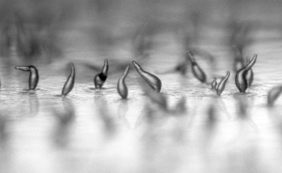

Dictyostelium inspires creativity, and this page contains the first beautiful examples. If you would like to share art that finds its source in Dictyostelium, created by you or an artist you know, please contact dictyBase.
|
Project Homo Amoeba investigates the ideal of flexibility. One is flexible when one can adapt to all situations. For humans, this is more an ideal than reality. For amoebas, being elastic and flexible is no exception. Dictyostelium serves here as a representation of the ideal. A man attempts to imitate the movement. Artúr van Balen, April 2008 Please click on the YouTube link to rate this movie. |
From the beginning of the journey,
it is we who lead the way,
we call the tune
we beat the drum
we send our chemical messages
and you.... you must obey.
But at the journey's end,
at the culmination of it all,
we are the stalk and the stem
who raise you up to the sky
so that you might live
while we.... we must die.
Download the pdf version of this poem.
Graphics generated when the Nature cover was created for the publication of the Dictyostelium Genome (Nature, 5th May 2005).
Click on an image to get a full sized picture
Permission is hereby granted by the copyright holder to use these images for any non-commercial use, including inclusion in web pages, presentations, and reports. The images should have a minimal attribution of "Copyright, Paul H. Dear, MRC Laboratory of Molecular Biology, Cambridge, UK"
|  |
Image by Matthew Springer, Stanford University. See it at National Geographic. |
|
Project We're Not So Different - "Altruistic Amoeba" Kurtis Ross, 2014 Please click on the YouTube link to rate this movie. |